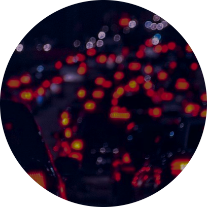

Smart Cities
Smart Cities, ou cidades inteligentes, desempenham um papel crucial na criação de comunidades urbanas mais adaptáveis e sustentáveis, capacitando os governos locais e os cidadãos a enfrentar os desafios emergentes das áreas urbanas modernas. Ao alavancar a tecnologia para melhorar a eficiência dos serviços públicos, a utilização de recursos e a mobilidade, essas cidades promovem um ambiente propício ao crescimento econômico, ao mesmo tempo que mitigam os impactos negativos no meio ambiente. Além disso, ao incentivar a participação cívica e o envolvimento dos cidadãos no processo de tomada de decisões, as Smart Cities promovem uma governança mais transparente e responsiva, resultando em comunidades mais resilientes e inclusivas. Ao abraçar os princípios das cidades inteligentes, as sociedades estão se preparando para um futuro mais sustentável e colaborativo, onde a qualidade de vida e o bem-estar de todos são prioridades fundamentais.
Trânsito, o tema escolhido
Para começarmos a pensar em uma solução, o primeiro passo foi realizar uma pesquisa, através de um formulário do Google e realizar um levantamento de qual o problema mais recorrente na cidade de São Paulo. E assim, percebemos que o trânsito, que por sua definição, é o movimento de veículos, pedestres e outros participantes nas vias públicas, seja em áreas urbanas ou rurais. Ele desempenha um papel vital na conectividade e mobilidade das comunidades, facilitando o deslocamento de pessoas e bens de um lugar para outro. Entretanto, esse trânsito pode gerar o congestionamento, ocorre quando o fluxo de veículos excede a capacidade da infraestrutura viária, resultando em uma redução significativa na velocidade e eficiência do tráfego. Fatores como um número excessivo de veículos, acidentes, condições climáticas adversas e problemas de infraestrutura podem contribuir para o congestionamento.
O trânsito...
Afeta
Toda Capital de São Paulo
Causa
Estresse, desgaste mental, além da perda de tempo
Consequências
Prejudica a saúde tanto mental quanto físico
Aumenta
Chances de acidentes e falta de segurança
E como iremos resolver?
Para resolver esse problema, as Tech Girls desenvolveram uma solução principal, que chamamos de Tiana, uma inteligência artificial integrada com o ESP32, que iremos abordar mais para frente. A solução Tiana, surge como resposta ao desafiador problema do congestionamento de tráfego em São Paulo. Com uma abordagem centrada no usuário, Tiana é uma inteligência artificial projetada para proporcionar uma experiência de trânsito mais fluida e eficiente, oferecendo alternativas estratégicas para aliviar a pressão do tráfego na cidade. Através de um processo de cadastro simples e seguro, os usuários podem personalizar suas preferências e necessidades, permitindo que Tiana forneça informações e rotas personalizadas de acordo com as especificidades de cada usuário. Com recursos abrangentes, incluindo a capacidade de participar de pesquisas de qualificação de trânsito, verificar a situação do tráfego em tempo real, fornecer feedback sobre rotas específicas e muito mais, Tiana busca não apenas otimizar a jornada do usuário, mas também melhorar continuamente sua funcionalidade com base no feedback valioso dos usuários. Através de uma interação intuitiva e orientada pelo usuário, Tiana oferece uma gama de recursos que visam não apenas melhorar a experiência de trânsito, mas também incentivar a participação ativa dos usuários no aprimoramento contínuo do sistema.
Com a possibilidade de fornecer informações em tempo real sobre rotas congestionadas,
oferecer rotas alternativas estratégicas e facilitar a comunicação bidirecional entre
os usuários e as Tech Girls, Tiana está moldando a forma como os cidadãos de São
Paulo lidam com os desafios do tráfego urbano, ao mesmo tempo em que impulsiona o
progresso contínuo em direção a um sistema de trânsito mais inteligente e eficiente.
Além de atender às demandas dos motoristas, a solução Tiana também disponibiliza
recursos abrangentes para pedestres, incentivando a mobilidade sustentável,
especialmente através do estímulo ao uso de bicicletas, em conformidade com as
regulamentações de trânsito vigentes. Facilitando rotas alternativas para ciclistas
e fornecendo informações detalhadas sobre opções de transporte público, incluindo
horários, paradas e conexões, Tiana visa promover uma consciência mais ampla em
relação a opções de mobilidade ecológicas e saudáveis. Ao abraçar essa abordagem
abrangente, a solução Tiana busca desempenhar um papel fundamental na construção de
uma cidade mais sustentável e ecologicamente consciente para o futuro.